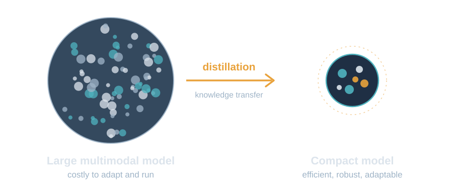

About E-MORE
Efficient Models of Multimodal Representations
Why this project
Large multimodal models have changed vision–language learning. They combine massive pretraining data with powerful architectures and transfer remarkably well to new tasks. Adapting and deploying them, however, remains costly because of their size, their modality-specific components and their task-specific requirements.
E-MORE addresses this gap. Its aim is to make multimodal models efficient to adapt and run, without giving up robustness, reliability or the ability to handle heterogeneous modalities such as images, text, audio, skeletons or 3D data.
What we want to achieve
The project brings together several complementary ideas: parameter-efficient adaptation, compact models obtained by distillation, learning strategies based on reinforcement learning, structured and geometric representations, and methods for trustworthy and privacy-aware AI. Together they aim at multimodal models that are smaller, more adaptable and easier to trust.
Where it takes place
E-MORE is carried out at the Facultat de Matemàtiques i Informàtica of the Universitat de Barcelona, and is the continuation of previous work of the group on multimodal learning.
From large to compact
A central idea of the project is to transfer the knowledge of very large multimodal models into compact ones that are cheaper to adapt, easier to deploy and more robust.
